| Alex X. Lee | Anusha Nagabandi | Pieter Abbeel | Sergey Levine |
| University of California, Berkeley |
| Code [GitHub] | Paper [arXiv] |
| 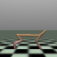 | 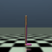 | 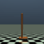 | 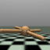 |
| 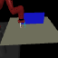 | 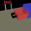 | 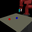 | 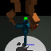 |
| 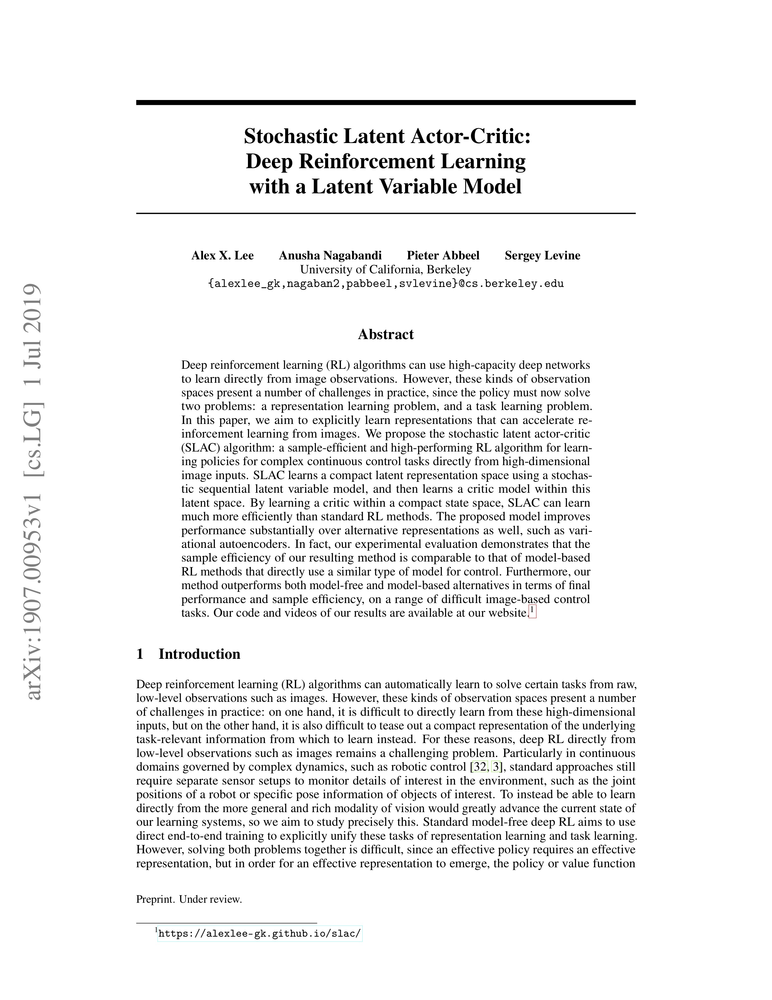 |
A. X. Lee, A. Nagabandi, P. Abbeel, S. Levine Stochastic Latent Actor-Critic: Deep Reinforcement Learning with a Latent Variable Model. In Neural Information Processing Systems (NeurIPS), 2020. [arXiv] |
| [Bibtex] |
| 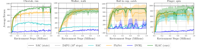 |
| Example image sequences and samples from the model | ||||
| Ground Truth Observations | ||||
| Posterior Samples |
|
|||
| Conditional Prior Samples |
|
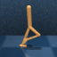 |
|
|
| Prior Samples | 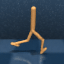 | |||
| 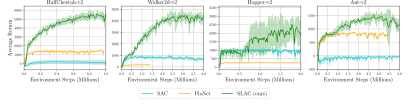 |
| Example image sequences and samples from the model | ||||
| Ground Truth Observations | 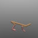 | 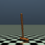 |

|
|
| Posterior Samples | 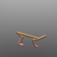 |

|
||
| Conditional Prior Samples | 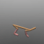 | 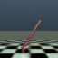 | 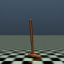 | 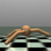 |
| Prior Samples |

|
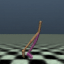 | 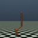 | 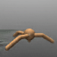 |
| Example image sequences and samples from the model | ||||
| Ground Truth Observations | 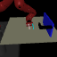 | 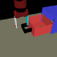 | 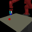 | |
| Posterior Samples | 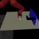 | |||
| Conditional Prior Samples | 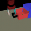 | 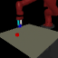 | ||
| Prior Samples | 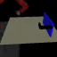 |

|
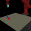 | |
| We thank Marvin Zhang, Abhishek Gupta, and Chelsea Finn for useful discussions and feedback, and we thank Kristian Hartikainen, Danijar Hafner, and Maximilian Igl for providing timely assistance with SAC, PlaNet, and DVRL, respectively. We also thank Deirdre Quillen, Tianhe Yu, and Chelsea Finn for providing us with their suite of Sawyer manipulation tasks. This research was supported by the National Science Foundation through IIS-1651843 and IIS-1700697, as well as ARL DCIST CRA W911NF-17-2-0181 and the Office of Naval Research. Compute support was provided by NVIDIA. |